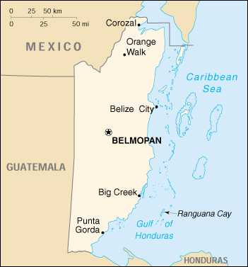

|
Belize | |
| Introduction Geography People Government Economy Communications Transportation Military Transnational Issues | ||
|  | ||
| Belize | Introduction | Top of Page |
| Background: | Territorial disputes between the UK and Guatemala delayed the independence of Belize (formerly British Honduras) until 1981. Guatemala refused to recognize the new nation until 1992. Tourism has become the mainstay of the economy. The country remains plagued by high unemployment, growing involvement in the South American drug trade, and increased urban crime. |
| Belize | Geography | Top of Page |
| Location: | Middle America, bordering the Caribbean Sea, between Guatemala and Mexico |
| Geographic coordinates: | 17 15 N, 88 45 W |
| Map references: | Central America and the Caribbean |
| Area: |
total:
22,966 sq km
land: 22,806 sq km water: 160 sq km |
| Area - comparative: | slightly smaller than Massachusetts |
| Land boundaries: |
total:
516 km
border countries: Guatemala 266 km, Mexico 250 km |
| Coastline: | 386 km |
| Maritime claims: |
exclusive economic zone:
200 NM
territorial sea: 12 NM in the north, 3 NM in the south; note - from the mouth of the Sarstoon River to Ranguana Cay, Belize's territorial sea is 3 NM; according to Belize's Maritime Areas Act, 1992, the purpose of this limitation is to provide a framework for the negotiation of a definitive agreement on territorial differences with Guatemala |
| Climate: | tropical; very hot and humid; rainy season (May to November); dry season (February to May) |
| Terrain: | flat, swampy coastal plain; low mountains in south |
| Elevation extremes: |
lowest point:
Caribbean Sea 0 m
highest point: Victoria Peak 1,160 m |
| Natural resources: | arable land potential, timber, fish, hydropower |
| Land use: |
arable land:
10%
permanent crops: 1% permanent pastures: 2% forests and woodland: 84% other: 3% (2000 est.) |
| Irrigated land: | 20 sq km (1993 est.) |
| Natural hazards: | frequent, devastating hurricanes (September to December) and coastal flooding (especially in south) |
| Environment - current issues: | deforestation; water pollution from sewage, industrial effluents, agricultural runoff; solid waste disposal |
| Environment - international agreements: |
party to:
Biodiversity, Climate Change, Desertification, Endangered Species, Hazardous Wastes, Law of the Sea, Ozone Layer Protection, Ship Pollution, Wetlands
signed, but not ratified: none of the selected agreements |
| Geography - note: | only country in Central America without a coastline on the North Pacific Ocean |
| Belize | People | Top of Page |
| Population: | 256,062 (July 2001 est.) |
| Age structure: |
0-14 years:
42.04% (male 54,876; female 52,780)
15-64 years: 54.43% (male 70,534; female 68,837) 65 years and over: 3.53% (male 4,403; female 4,632) (2001 est.) |
| Population growth rate: | 2.7% (2001 est.) |
| Birth rate: | 31.69 births/1,000 population (2001 est.) |
| Death rate: | 4.7 deaths/1,000 population (2001 est.) |
| Net migration rate: | 0 migrant(s)/1,000 population (2001 est.) |
| Sex ratio: |
at birth:
1.05 male(s)/female
under 15 years: 1.04 male(s)/female 15-64 years: 1.02 male(s)/female 65 years and over: 0.95 male(s)/female total population: 1.03 male(s)/female (2001 est.) |
| Infant mortality rate: | 25.14 deaths/1,000 live births (2001 est.) |
| Life expectancy at birth: |
total population:
71.19 years
male: 68.91 years female: 73.57 years (2001 est.) |
| Total fertility rate: | 4.05 children born/woman (2001 est.) |
| HIV/AIDS - adult prevalence rate: | 2.01% (1999 est.) |
| HIV/AIDS - people living with HIV/AIDS: | 2,400 (1999 est.) |
| HIV/AIDS - deaths: | 170 (1999 est.) |
| Nationality: |
noun:
Belizean(s)
adjective: Belizean |
| Ethnic groups: | mestizo 43.7%, Creole 29.8%, Maya 10%, Garifuna 6.2%, other 10.3% |
| Religions: | Roman Catholic 62%, Protestant 30% (Anglican 12%, Methodist 6%, Mennonite 4%, Seventh-Day Adventist 3%, Pentecostal 2%, Jehovah's Witnesses 1%, other 2%), none 2%, other 6% (1980) |
| Languages: | English (official), Spanish, Mayan, Garifuna (Carib), Creole |
| Literacy: |
definition:
age 15 and over can read and write
total population: 70.3% male: 70.3% female: 70.3% (1991 est.) note: other sources list the literacy rate as high as 75% |
| Belize | Government | Top of Page |
| Country name: |
conventional long form:
none
conventional short form: Belize former: British Honduras |
| Government type: | parliamentary democracy |
| Capital: | Belmopan |
| Administrative divisions: | 6 districts; Belize, Cayo, Corozal, Orange Walk, Stann Creek, Toledo |
| Independence: | 21 September 1981 (from UK) |
| National holiday: | Independence Day, 21 September (1981) |
| Constitution: | 21 September 1981 |
| Legal system: | English law |
| Suffrage: | 18 years of age; universal |
| Executive branch: |
chief of state:
Queen ELIZABETH II (since 6 February 1952), represented by Governor General Sir Colville YOUNG (since 17 November 1993)
head of government: Prime Minister Said MUSA (since 27 August 1998); Deputy Prime Minister John BRICENO (since 1 September 1998) cabinet: Cabinet appointed by the governor general on the advice of the prime minister elections: none; the monarch is hereditary; governor general appointed by the monarch; governor general appoints the member of the House of Representatives who is leader of the majority party to be prime minister |
| Legislative branch: |
bicameral National Assembly consists of the Senate (eight members, five appointed on the advice of the prime minister, two on the advice of the leader of the opposition, and one by the governor general; members are appointed for five-year terms); and the House of Representatives (29 seats; members are elected by direct popular vote to serve five-year terms)
elections: House of Representatives - last held 27 August 1998 (next to be held by NA August 2003) election results: percent of vote by party - PUP 59.2%, UDP 40.8%; seats by party - PUP 26, UDP 3 |
| Judicial branch: | Supreme Court (the chief justice is appointed by the governor general on the advice of the prime minister) |
| Political parties and leaders: | People's United Party or PUP [Said MUSA]; United Democratic Party or UDP [Manuel ESQUIVEL, Dean BARROW, Doug SINGH] |
| Political pressure groups and leaders: | Society for the Promotion of Education and Research or SPEAR [Diane HAYLOCK]; United Worker's Front |
| International organization participation: | ACP, C, Caricom, CDB, ECLAC, FAO, G-77, IADB, IBRD, ICAO, ICFTU, ICRM, IDA, IFAD, IFC, IFRCS, ILO, IMF, IMO, Intelsat (nonsignatory user), Interpol, IOC, IOM, ITU, LAES, NAM, OAS, OPANAL, UN, UNCTAD, UNESCO, UNIDO, UPU, WCL, WHO, WIPO, WMO, WTrO |
| Diplomatic representation in the US: |
chief of mission:
Ambassador Lisa M. SHOMAN
chancery: 2535 Massachusetts Avenue NW, Washington, DC 20008 telephone: [1] (202) 332-9636 FAX: [1] (202) 332-6888 consulate(s) general: Los Angeles |
| Diplomatic representation from the US: |
chief of mission:
Ambassador Carolyn CURIEL
embassy: 29 Gabourel Lane and Hutson Street, Belize City mailing address: P. O. Box 286, Unit 7401, APO AA 34025 telephone: [501] (2) 77161 FAX: [501] (2) 30802 |
| Flag description: | blue with a narrow red stripe along the top and the bottom edges; centered is a large white disk bearing the coat of arms; the coat of arms features a shield flanked by two workers in front of a mahogany tree with the related motto SUB UMBRA FLOREO (I Flourish in the Shade) on a scroll at the bottom, all encircled by a green garland |
| Belize | Economy | Top of Page |
| Economy - overview: | The small, essentially private enterprise economy is based primarily on agriculture, agro-based industry, and merchandising, with tourism and construction assuming greater importance. Sugar, the chief crop, accounts for nearly half of exports, while the banana industry is the country's largest employer. The government's tough austerity program in 1997 resulted in an economic slowdown that continued in 1998. The trade deficit has been growing, mostly as a result of low export prices for sugar and bananas. The tourist and construction sectors strengthened in early 1999, supporting growth of 6% in 1999 and 4% in 2000. Aided by international donors, the government's key short-term objective remains the reduction of poverty. |
| GDP: | purchasing power parity - $790 million (2000 est.) |
| GDP - real growth rate: | 4% (2000 est.) |
| GDP - per capita: | purchasing power parity - $3,200 (2000 est.) |
| GDP - composition by sector: |
agriculture:
18%
industry: 24% services: 58% (2000 est.) |
| Population below poverty line: | 33% (1999 est.) |
| Household income or consumption by percentage share: |
lowest 10%:
NA%
highest 10%: NA% |
| Inflation rate (consumer prices): | 2% (2000 est.) |
| Labor force: |
71,000
note: shortage of skilled labor and all types of technical personnel (1997 est.) |
| Labor force - by occupation: | agriculture 38%, industry 32%, services 30% (1994) |
| Unemployment rate: | 12.8% (1999) |
| Budget: |
revenues:
$157 million
expenditures: $279 million, including capital expenditures of $NA (1999 est.) |
| Industries: | garment production, food processing, tourism, construction |
| Industrial production growth rate: | 4.6% (1999) |
| Electricity - production: | 185 million kWh (1999) |
| Electricity - production by source: |
fossil fuel:
56.76%
hydro: 43.24% nuclear: 0% other: 0% (1999) |
| Electricity - consumption: | 172.1 million kWh (1999) |
| Electricity - exports: | 0 kWh (1999) |
| Electricity - imports: | 0 kWh (1999) |
| Agriculture - products: | bananas, coca, citrus, sugarcane; lumber; fish, cultured shrimp |
| Exports: | $235.7 million (f.o.b., 2000 est.) |
| Exports - commodities: | sugar, bananas, citrus, clothing, fish products, molasses, wood |
| Exports - partners: | US 42%, UK 33%, EU 12%, Caricom 4.8%, Canada 2%, Mexico 1% (1999) |
| Imports: | $413 million (c.i.f., 2000 est.) |
| Imports - commodities: | machinery and transportation equipment, manufactured goods; food, beverages, tobacco; fuels, chemicals, pharmaceuticals |
| Imports - partners: | US 58%, Mexico 12%, UK 5% EU 5%, Central America 5%, Caricom 4% (1998) |
| Debt - external: | $338 million (1998) |
| Economic aid - recipient: | $NA |
| Currency: | Belizean dollar (BZD) |
| Currency code: | BZD |
| Exchange rates: | Belizean dollars per US dollar - 2.0000 (fixed rate pegged to the US dollar) |
| Fiscal year: | 1 April - 31 March |
| Belize | Communications | Top of Page |
| Telephones - main lines in use: | 31,000 (1997) |
| Telephones - mobile cellular: | 3,023 (1997) |
| Telephone system: |
general assessment:
above-average system
domestic: trunk network depends primarily on microwave radio relay international: satellite earth station - 1 Intelsat (Atlantic Ocean) |
| Radio broadcast stations: | AM 1, FM 12, shortwave 0 (1998) |
| Radios: | 133,000 (1997) |
| Television broadcast stations: | 2 (1997) |
| Televisions: | 41,000 (1997) |
| Internet country code: | .bz |
| Internet Service Providers (ISPs): | 2 (2000) |
| Internet users: | 12,000 (2000) |
| Belize | Transportation | Top of Page |
| Railways: | 0 km |
| Highways: |
total:
2,872 km
paved: 488 km unpaved: 2,384 km (1998 est.) |
| Waterways: | 825 km (river network used by shallow-draft craft; seasonally navigable) |
| Ports and harbors: | Belize City, Big Creek, Corozol, Punta Gorda |
| Merchant marine: |
total:
402 ships (1,000 GRT or over) totaling 1,575,851 GRT/2,241,731 DWT
ships by type: bulk 27, cargo 265, chemical tanker 6, combination ore/oil 1, container 14, passenger 1, passenger/cargo 2, petroleum tanker 56, refrigerated cargo 18, roll on/roll off 7, short-sea passenger 1, specialized tanker 1, vehicle carrier 3 note: includes some foreign-owned ships registered here as a flag of convenience: Cuba 1, Singapore 1, US 1 (2000 est.) |
| Airports: | 44 (2000 est.) |
| Airports - with paved runways: |
total:
4
1,524 to 2,437 m: 1 914 to 1,523 m: 1 under 914 m: 2 (2000 est.) |
| Airports - with unpaved runways: |
total:
40
2,438 to 3,047 m: 1 914 to 1,523 m: 10 under 914 m: 29 (2000 est.) |
| Belize | Military | Top of Page |
| Military branches: | Belize Defense Force (includes Army, Maritime Wing, Air Wing, and Volunteer Guard) |
| Military manpower - military age: | 18 years of age |
| Military manpower - availability: | males age 15-49: 62,698 (2001 est.) |
| Military manpower - fit for military service: | males age 15-49: 37,174 (2001 est.) |
| Military manpower - reaching military age annually: | males: 2,847 (2001 est.) |
| Military expenditures - dollar figure: | $17 million (FY98/99) |
| Military expenditures - percent of GDP: | 2.4% (FY98/99) |
| Belize | Transnational Issues | Top of Page |
| Disputes - international: | Guatemala periodically asserts claims to territory in southern Belize; to deter cross-border squatting, both states in 2000 agreed to a "line of adjacency" based on the de facto boundary, which is not recognized by Guatemala |
| Illicit drugs: | minor transshipment point for cocaine; small-scale illicit producer of cannabis for the international drug trade; minor money-laundering center |
{kind=link}
{kind=link}